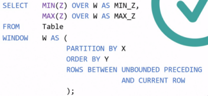
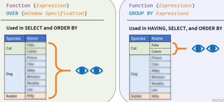
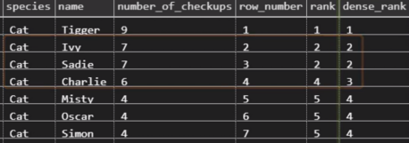

SQL
Advanced SQL – Window Functions (LinkedIn Learning)
Blank OVER()
- Blank OVER() clause will make the window consider the whole set
Filtering data
- when using a subquery in a SELECT statement, and the sub-query contains a WHERE clause, then the WHERE clause must be duplicated in the main query (see 2.2 3:25)
- with WINDOW functions, it's enough to filter in the main query WHERE clause, and that data is all that the WINDOW funtions sees!
Non-correlated Subquery Example
- Example of non-correlated subquery i.e. which will be executed only once - see 2.3 3:20
Dual Purpose of ORDER BY clause
- see 2.3 3:45
- Aggregate and frame offset window functions are inherently order agnostic. For these, ORDER BY is used for defining frames that further limit the rows visible to the function
- For rank, row offset, and distribution window functions, ORDER BY defines how the function is evaluated.
Framing Rows and Ranging
- UNBOUNDED PRECEDING, UNBOUNDED FOLLOWING, CURRENT ROW, 1 PRECEDING, 1 FOLLOWING etc
-
can be applied to ROWS, RANGES and GROUPS
-
ROWS frame boundaries are specified using row position count
- e.g. one row, 20 row, or all the rows that either precede or follow the current one
- Row frames don't care what values are in these rows, they just count rows
- N PRECEDING and N FOLLOWING, point to any number of rows before or after the current one
-
RANGE frames are specified using value ranges that either precede or follow the current row
- regardless of how many rows they cover
- RANGE frames are data type dependent.
- Example: an integer range of 10 represents all rows that have a sorting value which is plus or minus 10 from the current rows value
- Value, NOT position
- CUREENT ROW for RANGE frames doesn't refer to the current row's position like it did with the ROWS frame.
- For RANGE, it refers to the current row's value, and that includes all rows that share the same value.
-
GROUPS frames are defined using the number of peer groups following or preceding the current row's group. - see 3.1 05:51
- A peer group is a set of rows that share the same sorting values.
- So when evaluated for the second row in this partition, a group frame that begins with one PRECEDING and ends with one FOLLOWING, will cover all partition rows
The Window Clause

Windows vs Group Aggregate Functions
- Aggregate Window Functions are defined with the OVER clause.
- They see all the rows or row groups as defined by their window specification.
- They don't see individual rows within each row group.
- Aggregate Grouped Functions
- can be used in the HAVING, SELECT, and ORDER BY clauses.
- They see individual rows within each group, but they can't see any row groups other than their own

RANK Window Functions
- ORDER BY determines the basis for the rank and is mandatory.
- a rank of an expression is always relative to others within its partition
- Framing doesn't make sense for Rank functions
RANK vs DENSE_RANK

Ntile
- Ntile segments a partition into as equal as possible n or less segments.
- Each segment is called a tile. Ntile assigns each row an integer number out of a monotonically increasing sequence starting with one and ending either at N or the number of rows within the partition in case there are fewer of those.
Some Sample Queries
SELECT train, dest, time FROM (
SELECT train, dest, time,
RANK() OVER (PARTITION BY train ORDER BY time DESC) dest_rank
FROM traintable
) where dest_rank = 1
select * from PREDICATION where SUBJECT_SEMTYPE in ('gngm') limit 10;
select * from ENTITY where SEMTYPE in ('gngm') and GENE_ID <> '' limit 10;
select count([Incident Type]), [Incident Type]
FROM [dbo].[bat_2020]
Group by [Incident Type]
SELECT MIN ([Created Date Time]) AS "Min Date" ,
MAX ([Created Date Time]) AS "Max Date"
FROM [dbo].[bat_2020]
Useful commands
Determine table column size
Select max(len([number])) as [number]
,max(len([u_opened_date])) as [u_opened_date]
...
from dbo.mytable
Insert from another table
To get the table details
show create table ENTITY;
To create the new ENTITY2 table, copy/paste from the above output.
insert into ENTITY2 select * from ENTITY where GENE_ID <> '';
See table columns and their data types
SELECT DATA_TYPE FROM INFORMATION_SCHEMA.COLUMNS
WHERE table_name = 'tbl_name' AND COLUMN_NAME = 'col_name';
Create DB
GRANT ALL PRIVILEGES ON *.* TO 'root'@'localhost' IDENTIFIED BY 'root';
CREATE DATABASE dbname;
USE dbname;
Import from sql.gz file
sudo apt-get install pv
zcat filename.sql.gz | pv -cN zcat | mysql -u root -p -f -D dbname ;
Get stats
SELECT table_schema "dbname",
ROUND(SUM(data_length + index_length) / 1024 / 1024, 1) "DB Size in MB"
FROM information_schema.tables
GROUP BY table_schema;
or (requires mysql v5.7+)
select table_schema, table_name, rows_fetched, rows_inserted, rows_updated, rows_deleted
from sys.schema_table_statistics where table_schema='dbname';
or
SHOW TABLE STATUS dbname;
Logging
- start logging:
tee ./mylofile.log - stop logging:
notee
Where is the table data stored?
- it is specified in
my.cnf - otherwise, the default location is
/var/lib/mysql/
Partition
alter table ENTITY partition by range(ENTITY_ID)(
partition p0 values less than (250000000),
partition p1 values less than (500000000),
partition p2 values less than (750000000),
partition p3 values less than maxvalue
);
Set Primary Key
ALTER TABLE table_name ADD PRIMARY KEY (column_1, column_2);
Drop foreign key
ALTER TABLE ENTITY DROP FOREIGN KEY 'ENTITY_ibfk_1';
Note: would this be better??
ALTER TABLE foo DISABLE KEYS;
do stuff
ALTER TABLE ENABLE KEYS;
Increase buffer size for large import
$ sudo nano /etc/my.cnf
[mysqld] innodb_buffer_pool_size=228G
Error with MySQL: "The total number of locks exceeds the lock table size"
Misc. Mysql
$ mysql -u root -p$ sudo service mysql restartSHOW ENGINE INNODB STATUS;show table status like 'ENTITY'\G;# number of rows in tableSELECT ENTITY_ID, COUNT(*) c FROM ENTITY_GENE GROUP BY ENTITY_ID HAVING c > 1;# find duplicates